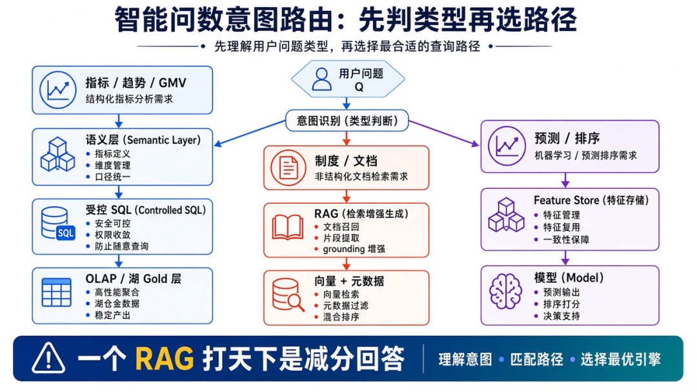

来源：微信公众号 · 原始链接 https://mp.weixin.qq.com/s/noSc2T3Tdg4vbBNSR3S0zA · 归档 2026-11-13
一、大厂怎么考
问数面试不是考 Prompt 写得花不花，而是证明你懂：类型系统、权限、对账、幻觉分类。
二、答题总框架
1. 澄清：指标问数、文档问答，还是预测？2. 结论：先路由；指标必须走语义层。3. 画链路：意图 → 语义绑定 → 校验 → SQL → 对账 → 展示4. 说原理：Schema Linking 是有限类型匹配，不是搜全库5. 说 trade-off：覆盖不足就拒绝/澄清，不要硬编6. 说生产：权限、审计日志、口径版本、Eval 集7. 补一个坑：SUM 毛利率 / 用下单当 GMV
万能开场
「我先确认问题类型。GMV、趋势走语义层生成受控 SQL；制度文档走 RAG。LLM 只做意图和 Schema Linking，不定义口径，也不直接扫明细。上线看三件事：路由对不对、SQL 过不过校验、结果能不能和预计算指标对上。成功率是目标加评测，不承诺百分之百。」
三、术语共识
四、核心架构与图解
4.1 意图路由

核心要点：只有 RAG 是减分；混合问题（「为什么 GMV 跌了」）= SQL 取数 + 可选文档解释。4.2 Schema Linking
4.3 Trust 三层
真实边界：问数成功率 =语义覆盖 + 路由正确 + 对账通过，不是「模型越大越准」。4.4 幻觉四类（要分开治）
五、高频题 + 标准答法
Q1【美团/携程】智能问数和 RAG 怎么分流？
参考答法：数值、趋势、同比走语义层 SQL；制度、流程、非结构化走 RAG；「为什么跌了」先 SQL 再可选 RAG。不要一个向量库答所有。
Q2【字节/阿里】为什么必须有语义层？宽表不够吗？
参考答法：宽表解决加速，不解决同义指标、可加性、权限下推、口径版本。Schema Linking 需要有限、稳定的类型系统。宽表可以当物化，不能当契约。
Q3【字节/阿里】Schema Linking 怎么做才不像搜表？
参考答法：问法先归一到指标/维度 ID（同义词表 + 可选向量只做候选召回），再按语义层 Join 图生成 SQL。禁止直接把 200 张 Bronze 表塞进 Prompt。常见追问：召回错了怎么办？——置信低则澄清「你说的 GMV 是支付成功还是下单？」
Q4【数仓交叉】用户说「用户数」，系统怎么选指标？
参考答法：「用户数」是口头词，不是指标。应澄清：UV、注册用户、活跃用户。语义层为每个指标配置别名与示例问法；冲突必须澄清，不能默默挑一个。
Q5【阿里】Text2SQL 幻觉有哪些类型？如何分别治理？
参考答法：见 §4.4 四类。治理在架构：白名单、粒度、可加性、ACL；评测集按类型分开统计，不要只报一个「准确率」。
Q6【安全】行级权限放 Prompt 行不行？
参考答法：不行。权限在语义层定义，执行前写入 SQL 谓词或视图。生成后再让模型「不要泄露」不可靠。审计日志记录谁问了什么、命中哪些指标。
Q7【产品×架构】覆盖不到的问题怎么处理？
参考答法：拒绝或澄清优于胡编。同时把 miss 日志入湖，驱动指标字典补全。覆盖率是运营指标，不是上线当天的 100%。
Q8【评测】问数效果怎么评？和数据湖关系？
query、生成 SQL、命中指标 ID、对账结果应回流入湖，形成 Eval 集。
Q9【高阶】多轮对话「再按城市拆」怎么保持语义？
参考答法：会话状态保存已绑定的指标、时间、过滤；追加维度必须仍在该指标允许维度内。越界（把订单粒度指标拆到点击）应拒绝。不要每轮从零猜全库。
Q10【架构师综合】设计企业问数，湖和语义层在哪？
问法 → 路由 ├ 文档 → RAG（湖上 chunk + 向量索引） └ 指标 → 语义层（口径/维度/权限） → 受控 SQL → OLAP 或湖 Gold日志/Eval/对账 → 回湖
主动说：覆盖不足就澄清；Trust 三层展示给用户；模型不拥有口径。
六、二面/三面开放题
问数把毛利率 SUM 了，产品要不要显示数字？ 期望：拦截或改写，并解释不可加。
业务说「先上线再补字典」？ 期望：最小可用语义包（核心 20 指标）才能上，否则幻觉不可控。
同一问题两个口径版本？ 期望：绑定生效日/版本，回答里露出口径脚注。
Agent 能否自由写 SQL？ 期望：只能调受控 Tool（query_metrics），评 tool call accuracy。
用户满意度高但对数对不上？ 期望：满意度 ≠ 正确；要以对账为底线。